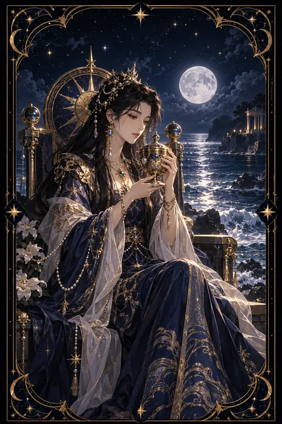

컵 여왕 카드 — 깊은 공감과 직관
컵 여왕 카드 한눈에 보기
컵 여왕 카드 상징 읽기

동네보살의 카드 그림은 전통 라이더–웨이트 덱의 뜻을 새 그림으로 옮긴 것입니다. 아래 상징 설명은 전통 덱의 그림을 기준으로 합니다.
여왕은 바닷가에 놓인 옥좌에 앉아 두 손으로 화려한 잔을 받쳐 들고 조용히 들여다봅니다. 컵 카드 가운데 유일하게 뚜껑이 덮인 이 잔은 겉으로 드러나지 않는 무의식과 깊은 감정, 그리고 직관의 비밀을 상징합니다.
옥좌에는 물의 요정과 조개 문양이 새겨져 있습니다. 감정의 세계를 다스리는 여왕의 정체성을 보여 주는 장식입니다. 여왕의 발치까지 밀려오는 파도는 감정과 현실이 맞닿아 있음을 뜻합니다.
발밑의 알록달록한 조약돌은 감정의 다양한 빛깔을, 멀리 펼쳐진 잔잔한 바다는 흔들림 없는 내면의 평온을 나타냅니다. 여왕의 푸른빛 옷자락이 물결과 하나로 이어지는 모습은 감정을 억누르지도 휩쓸리지도 않고 품어 내는 성숙함을 보여 줍니다. 옥좌가 물가 모래 위에 놓여 있다는 점은 감정의 바다와 현실의 땅 사이에서 균형을 잡는 여왕의 자리를 상징합니다.
컵 여왕 카드 정방향 뜻
정방향 컵 여왕은 따뜻한 공감 능력과 깊은 직관을 상징합니다. 사람들의 마음을 세심하게 읽어 내고 말하지 않아도 필요한 것을 알아채는 힘이 빛나는 시기입니다. 주변 사람들이 당신에게 위로와 조언을 구하러 찾아올 수 있습니다.
직감이 예민해져 사람이나 상황을 판단할 때 첫 느낌이 잘 맞아떨어집니다. 논리만으로 설명되지 않는 선택 앞에서는 마음의 소리를 믿어 보세요. 예술이나 글쓰기처럼 감성을 표현하는 활동에서도 좋은 결과를 얻기 쉽습니다.
이 카드는 감정에 끌려다니지 않으면서도 따뜻함을 잃지 않는 성숙한 태도를 보여 줍니다. 타인을 돌보는 만큼 자신의 감정도 소중히 여길 때 그 따뜻함이 오래 유지됩니다. 명상이나 일기 쓰기처럼 내면을 들여다보는 시간을 정기적으로 가지면 직관은 더 맑아집니다.
컵 여왕 카드 역방향 뜻
역방향 컵 여왕은 감정의 균형이 무너진 상태를 나타냅니다. 다른 사람의 감정을 지나치게 떠안아 정작 자신은 지쳐 버리거나 거절하지 못해 끌려다니는 모습일 수 있습니다. 누군가에게 기대지 않으면 불안해지는 의존적인 관계를 경고하기도 합니다.
반대로 감정을 오래 억눌러 두었다가 예상치 못한 순간에 폭발하는 흐름으로 읽기도 합니다. 기분의 기복이 커지고 사소한 말에도 쉽게 상처받을 수 있습니다.
이 카드는 다정함에도 경계선이 필요하다고 말합니다. 남을 돕는 일과 나를 지키는 일이 함께 가야 오래 버틸 수 있습니다. 부탁을 정중히 거절하는 연습을 하고 자신만을 위한 휴식 시간을 일정에 먼저 넣어 두세요. 믿을 만한 사람에게 속마음을 털어놓는 것만으로도 고여 있던 감정이 흐르기 시작합니다.
연애에서 컵 여왕 카드
솔로라면 마음을 깊이 이해해 주는 사람과 인연이 닿는 시기입니다. 겉모습보다 정서적인 교감을 중요하게 여기게 되며 대화가 편안한 사람에게 자연스럽게 끌립니다. 당신의 따뜻한 배려가 상대에게 큰 매력으로 다가갑니다.
연애 중이라면 서로의 감정을 세심하게 살피며 관계가 깊어지는 흐름입니다. 상대가 말로 표현하지 못한 고민을 알아채고 먼저 다독여 주면 신뢰가 한층 두터워집니다. 다만 상대를 돌보는 데만 집중하다 자신의 바람을 숨기지는 마세요. 원하는 것을 부드럽게 표현하는 것도 사랑의 한 방식입니다. 한쪽만 채워 주는 관계는 오래가기 어렵습니다. 서로의 잔을 번갈아 채워 주는 균형을 의식해 보세요. 대화 중에 상대의 말을 끝까지 들어 주는 태도가 가장 큰 매력이 됩니다. 감정을 나누는 깊이가 관계의 온도를 결정합니다.
재회·속마음 질문에서 컵 여왕 카드
재회 질문에서 컵 여왕이 나오면 상대가 아직 당신을 향한 정을 마음 깊이 품고 있을 수 있습니다. 쉽게 드러내지 않는 성향이라 겉으로는 무심해 보여도 속으로는 지난 시간을 자주 떠올리고 있을지 모릅니다. 서두르기보다 상대의 감정을 존중하며 조용히 안부를 전하는 방식이 잘 맞습니다. 요즘 상대의 사정이 어렵다고 들었다면 따뜻한 위로 한마디가 굳게 닫혔던 대화의 물꼬를 터 줄지도 모릅니다. 감정을 쏟아 내기보다 조용히 곁에 있어 주는 태도가 신뢰를 되살립니다. 여왕이 뒤집혀 나왔다면 외로움이나 의존에서 비롯된 재회 욕구일 수 있습니다. 먼저 자신의 마음을 충분히 돌본 뒤 결정하세요.
일·금전에서 컵 여왕 카드
일과 직장에서는 사람을 돌보고 마음을 읽는 재능이 빛을 보는 때입니다. 상담, 교육, 돌봄, 서비스, 인사처럼 사람을 대하는 분야라면 성과가 두드러집니다. 팀 안에서 갈등을 부드럽게 조율하는 역할을 맡게 될 수도 있습니다.
금전 면에서는 직감이 도움이 되지만 감정적인 판단으로 큰돈을 움직이지 않도록 주의하세요. 지인의 어려운 사정에 마음이 쓰여 돈을 빌려주기 쉬운 때이므로 도울 수 있는 범위를 미리 정해 두는 것이 좋습니다. 안정적인 저축 습관이 마음의 평화를 지켜 줍니다. 동료의 고민을 들어 주는 시간이 쌓이면 자연스럽게 신뢰받는 조율자가 됩니다. 다만 감정을 많이 쓰는 시기이니 퇴근 후에는 마음을 쉬게 할 시간을 꼭 확보하세요.
컵 여왕 카드는 예일까 아니오일까
직관과 공감으로 상황을 부드럽게 풀어 간다는 카드여서 마음이 이끄는 방향이라면 예로 봅니다. 여왕이 거꾸로 앉았다면 감정에 휩쓸려 중심을 잃기 쉬워 스스로를 먼저 돌봐야 하는 조건부입니다.
자주 묻는 질문
컵 여왕 카드 역방향은 나쁜 뜻인가요?
역방향 컵 여왕은 감정의 균형이 무너진 상태를 나타냅니다. 다른 사람의 감정을 지나치게 떠안아 정작 자신은 지쳐 버리거나 거절하지 못해 끌려다니는 모습일 수 있습니다. 누군가에게 기대지 않으면 불안해지는 의존적인 관계를 경고하기도 합니다.
컵 여왕 카드가 연애 질문에 나오면요?
솔로라면 마음을 깊이 이해해 주는 사람과 인연이 닿는 시기입니다. 겉모습보다 정서적인 교감을 중요하게 여기게 되며 대화가 편안한 사람에게 자연스럽게 끌립니다. 당신의 따뜻한 배려가 상대에게 큰 매력으로 다가갑니다.
타로 카드는 어떻게 뽑나요?
타로 카드 페이지에서 78장을 섞으면 그중 22장이 펼쳐집니다. 마음이 가는 세 장을 고르면 과거·현재·미래 자리에 놓이고, 한 장씩 뒤집어 자리와 방향에 맞는 풀이를 읽습니다. 정방향과 역방향은 섞는 순간 정해집니다.